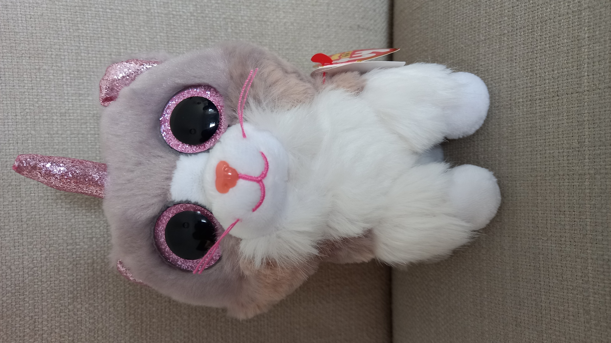

Dusty, fluffy, chonky cat!
Ash was born in February 19 2015, and has always loved... food. Lots of food.
She likes to eat low quality fast food every day (big mac), and her parents don't even care!
She can be a little crazy sometimes, but she is a nice, funny friend to have.
2. Her mouth and nose are different colours!
3. Her nose has detail on it. This is rare if you somehow didn't know already.
4. Her horn is smaller than average, which is strange because Heather's horn is bigger than average.
5. She has stripes on the back of her fur (and it isn't just because of the dumpster.)
She likes to eat low quality fast food every day (big mac), and her parents don't even care!
She can be a little crazy sometimes, but she is a nice, funny friend to have.
Fun Facts:
1. She spent 3 days in a dumpster, but managed to keep her fur clean(ish)!
2. Her mouth and nose are different colours!
3. Her nose has detail on it. This is rare if you somehow didn't know already.
4. Her horn is smaller than average, which is strange because Heather's horn is bigger than average.
5. She has stripes on the back of her fur (and it isn't just because of the dumpster.)